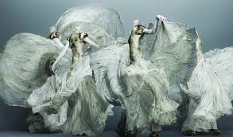
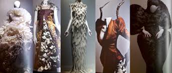
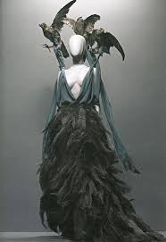
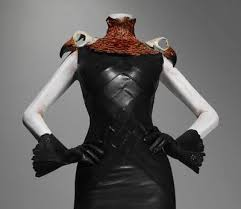

Savage Beauty was an art exhibition held in
2011 at the Metropolitan Museum of Art featuring
clothing created by British fashion designer Alexander
McQueen, as well as accessories created for his runway
shows. The exhibit was extremely popular in New York
City and resulted in what was then record attendance
for the museum. The curators were Andrew Bolton
and Harold Koda.


The exhibit was organized by the museum's Anna Wintour Costume Center
and curated by Andrew Bolton and Harold Koda. The exhibit featured
McQueen's pieces from the archives of his own London fashion house,
Alexander McQueen, and of the Parisian couture house Givenchy, as
well as pieces held in private collections. The show is composed
of six separate galleries, arranged by theme: "The Romantic Mind",
featuring some of his oldest work in the early 1990s; "Romantic
Gothic and the Cabinet of Curiosities", featuring his exploration
of Victorian Gothic themes; "Romantic Nationalism", examining
Scottish and British identity; "Romantic Exoticism", examining
non-western influences in his designs; "Romantic Primitivism",
featuring natural materials and organic designs; and "Romantic
Naturalism", featuring his attempts to integrate themes of the natural
world with technology.


The exhibit includes pieces from his first major collection,
Jack the Ripper Stalks His Victims, created during his graduate
studies at Central Saint Martins College of Art and Design. Other
notable collections in the exhibit include Dante, #13, VOSS, Irere,
and Plato's Atlantis, as well as Banshee, Highland Rape, The Widows
of Culloden (including the original life-size hologram of Kate Moss),
and Horn of Plenty.